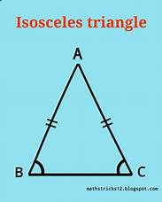

This is an isosceles triangle

An isosceles triangle is a triangle that has two sides of equal length.
Area of Isosceles Triangle (A) = A = ½[√(a2 - b2 /4) × b]
Perimeter of Isosceles Triangle (P) = 2a + b
Altitude of an Isosceles Triangle = √(a2 - b2/4)